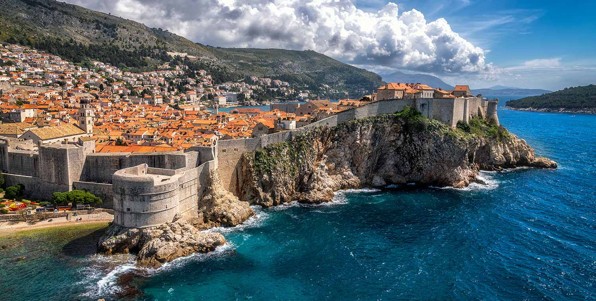

Croatie
Un peu d'histoire
la région est colonisée par des Celtes et des Grecs. L'Illyrie est un État souverain jusqu'à sa
conquête par la République romaine en -168. L'Empire contrôle les provinces de Pannonie et de Dalmatie, qui
passent après sa chute aux Huns, aux Ostrogoths puis aux Byzantins.
Les guerres de Yougoslavie constituent un ensemble de conflits qui se sont déroulés
entre le 31 mars
1991 et le 12 novembre 2001, en Europe de l'Est. Cet événement historique a notamment entraîné
l'indépendance de plusieurs pays, dont la Croatie, la Slovénie, le Kosovo, ainsi que la Bosnie-Herzégovine.
Date importante
| Aux Xe - XIe siècle |
Premier royaume croate |
| Au XIIe siècle |
Union des couronnes croate et hongroise |
| En 1527 |
Les Habsbourg (importante famille royale d'Europe) sont appelés sur le trône croate |
| En 1797 |
Chute de la République de Venise. La Dalmatie et l'Istrie reviennent à l'Autriche |
| En 1918 |
Création du royaume des Serbes, des Croates et des Slovènes |
| Le 29 novembre 1945 |
La Croatie entre dans la fédération yougoslave communiste. La République fédérative de
Yougoslavie
va alors tenter d'imposer le communisme comme idéologie supranationale aux six Républiques
(Slovénie, Croatie, Bosnie-Herzégovine, Serbie, Monténégro et Macédoine). |
| En 1971 |
Le Printemps croate. Les croates revendiquent une redistribution plus équitable des
richesses et de
la reconnaissance de leurs particularismes culturels; ce qui devient rapidement un mouvement de
masse. Tous réclament alors une démocratisation du régime et une réforme du système fédéral : ils
souhaitent obtenir le droit à l'autodétermination. |
| De 1991 à 1995 |
Déclaration puis guerre d'Indépendance : C'est en janvier 1992 que la communauté
européenne
reconnaît l'indépendance de la Croatie. |
| En 2009
| La croatie devient membre de l'Otan |
| En 2013 |
Entrée de la Croatie dans l'Union européenne. |
Fête nationale croate
La fête nationale croate (Dan drzavnosti) se fête le 25 juin. Etablie en 2001, ce jour de fête nationale rappelle
la date à laquelle a été proclamé la séparation entre la Croatie et l'ex-Yougoslavie par le Parlement : le 25
juin 1991.
Dubrovnik


Pourquoi aller a Dubrovnik
Réserves naturelles, plages, lacs, montagnes, cascades, villes fortifiées… tout y est
réuni pour passer un séjour agréable. Située en bord de mer, avec sa magnifique vieille ville historique,
Dubrovnik est l'un des endroits les plus intéressants à visiter en Dalmatie.
Quand aller à Dubrovnik ?
La meilleure période pour se rendre à Dubrovnik est en juillet et en août. Sur l'année,
la température moyenne varie beaucoup. Elle se situe autour de 17 °C.
Zadar
pourquoi aller a Zadar
Quand se pose la question de savoir où aller en Croatie au bord de la mer, Zadar ne s’impose pas autant qu’elle le devrait. La concurrence de Split et Dubrovnik en Dalmatie et dans une moindre mesure la piste de Pula et de Rovinj en Pula peuvent l’éclipser et c’est bien dommage.
adar est au carrefour entre trois régions : la Dalmatie, la Lika et le Kvarner. Elle est donc un point de chute parfait pour un court ou long séjour, car elle permet de réaliser un maximum de visites sans réaliser des déplacements trop importants. Elle est au maximum à 2h en voiture des principaux autres sites touristiques majeurs.
Les plages et les criques près de Zadar sont assez faciles d’accès et plutôt agréables, même si elles n’ont pas la réputation des stations de la riviera dalmate aux environs de Makarska.
Quand aller a Zadar
Les mois les plus favorables au niveau du climat à Zadar sont
- Avril
- Mai
- Juin
- Juillet
- Aout
- Septembre
- Octobre
Zagreb
pourquoi aller a Zagreb
Zagreb attire comme un aimant ceux qui veulent découvrir à la fois son passé et sa modernité, dont on peut voir les traces dans les rues du noyau ancien appelé Ville-Haute (Gornji grad). C'est une capitale animée et vivante. Pourtant ses vieux quartiers, Gradec et Kaptol, ont su garder leur charme et leur sérénité.
Quand aller a Zagreb
Les températures moyennes fluctuent de 4 ° (décembre) à 27 ° (juillet). Les mois les plus pluvieux sont : juillet, août et septembre . Nous conseillons les mois de juin, juillet, août, septembre, pour visiter Zagreb.